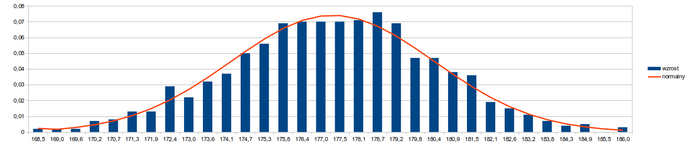

Laboratorium nr 2. Odpowiedzi
Odpowiedź do zadania D.2
empiryczny rozkład prawdopodobieństwa

Odpowiedź do zadania D.3
kombinatoryka dla 1-10 kostek

Odpowiedź do zadania D.5
porównanie z rozkładem teoretycznym

Odpowiedź E.4
porównanie z rozkładem normalnym N(70/2 , 5*sqrt(7/6))
